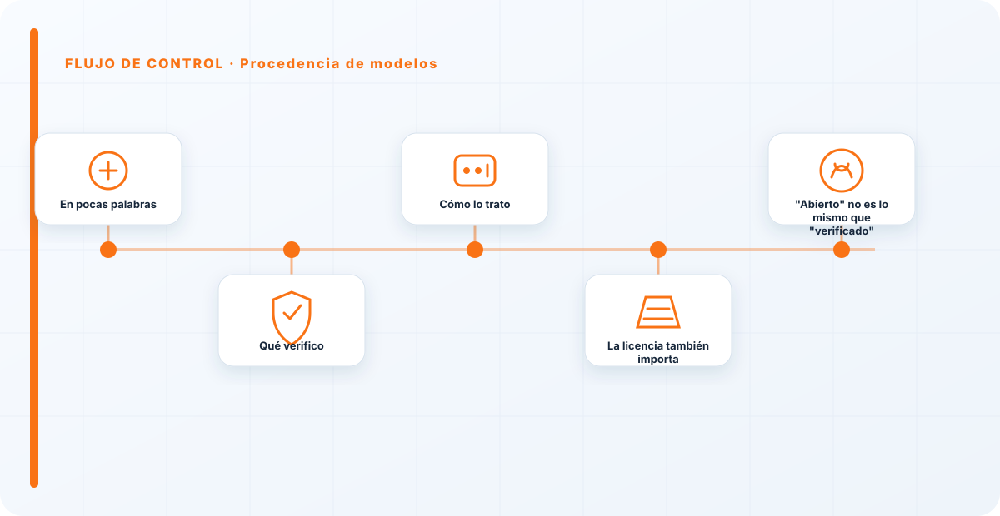
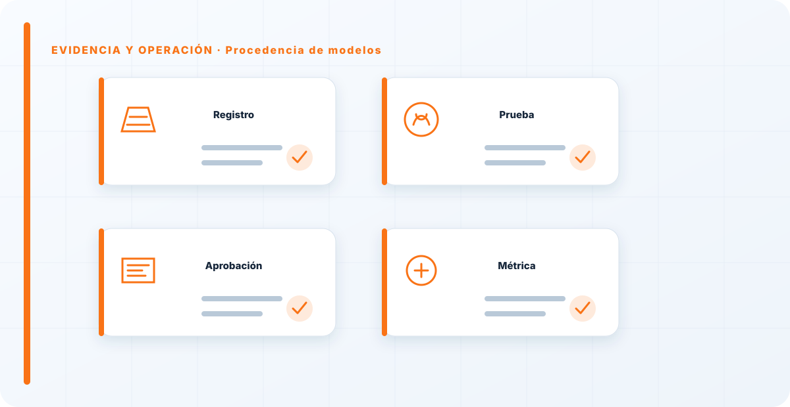

En pocas palabras
Ejecutar un modelo cuya procedencia no conoces es confiar a ciegas en algo que toma —o influye— decisiones por ti. La procedencia de modelos consiste en saber de dónde viene cada modelo que usas, quién lo publicó, con qué licencia y si su integridad es comprobable. Es la pieza más importante de tu sistema, y a la vez la que más gente da por sentada sin verificar.
Qué verifico
De dónde viene el modelo, quién lo publicó, con qué licencia lo puedes usar, y —crítico— si su integridad es comprobable: que lo que ejecutas es exactamente lo que crees, verificado con hash. Un modelo descargado de cualquier repositorio sin verificar puede traer pesos manipulados o venir de un entrenamiento envenenado de fábrica.
Y lo peligroso es que nada de eso se ve a simple vista: un modelo comprometido funciona, responde, parece normal. Solo la verificación de origen e integridad te dice si puedes fiarte.
Cómo lo trato
Con la misma desconfianza que aplico a cualquier dependencia externa: origen comprobable, integridad verificada con hash, y registro en el AI-BOM. Se enlaza directamente con la seguridad de modelos, que protege esos pesos una vez verificados.
No es paranoia: es aplicar a los modelos la disciplina de gestión de dependencias que ya usamos para el software, y que por algún motivo se relaja justo con la pieza más determinante del sistema.

La licencia también importa
Más allá de la seguridad, la procedencia tiene una cara legal que se olvida: la licencia del modelo. No todos los modelos "abiertos" permiten cualquier uso, y usar uno fuera de su licencia —en un producto comercial, por ejemplo— es un problema legal esperando. Verificar procedencia incluye verificar que tienes derecho a usarlo como lo estás usando.
Registrar la licencia junto al origen en el AI-BOM es lo que te evita descubrir tarde que el modelo sobre el que montaste tu producto no se podía usar así.
"Abierto" no es lo mismo que "verificado"
Hay una confusión muy extendida que conviene romper: que un modelo sea abierto no significa que sea seguro ni que esté verificado. "Abierto" habla de la licencia y del acceso a los pesos; no dice nada de si esos pesos que te has descargado son los originales o una versión manipulada por el camino. Un modelo abierto de un repositorio popular puede estar perfectamente comprometido si nadie verificó su integridad.
Por eso trato la apertura y la verificación como dos cosas separadas: la primera me dice si puedo usarlo, la segunda si puedo fiarme de lo que estoy ejecutando. Confundirlas —"es de un sitio conocido, será seguro"— es justo el hueco por el que entra un modelo trucado.
La gente audita hasta la última librería y luego se baja unos pesos de internet sin comprobar nada. Un modelo es código y datos a la vez; merece al menos la misma verificación. Si no puedes decir de dónde viene el modelo que tienes en producción y que no lo han tocado, no controlas la pieza más importante de tu sistema, solo esperas que esté bien.
Los errores que veo una y otra vez
- Descargar pesos sin verificar origen.
- No comprobar integridad con hash.
- Ignorar la licencia del modelo.
- No registrar el modelo en el AI-BOM.
- Confiar por defecto en repositorios públicos.
Cómo lo llevaría a un entorno real
Cuando aterrizo procedencia de modelos en una organización, no empiezo por comprar una herramienta ni por redactar veinte páginas. Empiezo por dibujar qué ocurre hoy: quién solicita el cambio, quién lo aprueba, qué sistemas intervienen, qué datos cruzan el proceso y quién se entera cuando algo falla. Ese dibujo suele descubrir más problemas que cualquier checklist. En cadena de suministro, lo peligroso no es solo carecer de controles; también lo es creer que existen porque alguien los escribió una vez.
Después separo lo imprescindible de lo deseable. Lo imprescindible debe poder comprobarse: un responsable identificado, una regla clara, una evidencia fechada y un mecanismo para reaccionar. En este caso revisaría especialmente modelo, versión y dataset. No me vale una respuesta del tipo «lo gestiona el proveedor» o «eso lo mira seguridad». Necesito saber qué persona toma la decisión, con qué información y dentro de qué plazo.
La implantación debe crecer con el riesgo. Un piloto interno puede funcionar con una ficha breve y una revisión manual. Un sistema que afecta a clientes, empleados, dinero o información sensible necesita segregación de funciones, pruebas independientes, monitorización y un expediente mantenido. Mi criterio es sencillo: cuanto más difícil sea deshacer el daño, más fuerte debe ser la barrera antes de producción.
Decisiones que deben quedar por escrito
Hay decisiones que no deberían vivir en una reunión ni en un mensaje de chat. Para procedencia de modelos dejaría documentados el alcance, los supuestos, los límites de uso, las excepciones aceptadas y las condiciones que obligan a detener o reevaluar. El documento no tiene que ser enorme, pero sí debe permitir que otra persona entienda por qué se hizo lo que se hizo.
También registraría quién puede cambiar evaluación, quién valida drift y quién recibe las alertas relacionadas con criterios de aceptación. Cuando esas tres responsabilidades se mezclan, aparece el clásico problema: el mismo equipo construye, aprueba y declara que todo funciona. No siempre se puede separar por completo, sobre todo en organizaciones pequeñas, pero al menos debe existir una revisión por alguien que no dependa del éxito inmediato del despliegue.
Las excepciones merecen un tratamiento propio. Una excepción sin fecha de caducidad acaba convirtiéndose en la arquitectura real. Por eso exigiría motivo, riesgo aceptado, responsable, compensaciones, fecha de revisión y criterio de cierre. Si falta uno de esos elementos, no es una excepción gestionada; es una deuda invisible.

Un ejemplo práctico
Imaginemos que un equipo quiere incorporar procedencia de modelos a un servicio que ya está en producción. La propuesta promete reducir tiempos y automatizar tareas, pero utiliza componentes que cambian con frecuencia. Antes de aprobarlo, pediría una prueba limitada, un inventario de dependencias, un flujo de datos y una definición clara de qué acciones quedan fuera del alcance.
Durante la prueba recogería resultados normales y casos límite. No solo miraría si funciona; comprobaría qué ocurre cuando faltan datos, cambia una versión, se pierde conectividad, llega una entrada manipulada o un usuario intenta superar sus permisos. Ahí es donde se ve si el diseño aguanta. En muchas pruebas felices todo parece seguro porque nadie ha intentado romper la hipótesis de partida.
Si los resultados son aceptables, la salida a producción tendría condiciones: versión fijada, configuración aprobada, logs disponibles, responsables de guardia, procedimiento de rollback y revisión tras las primeras semanas. Si alguno de esos elementos no existe, prefiero retrasar el despliegue. Un día de demora suele ser más barato que investigar después un comportamiento que nadie puede reconstruir.
Qué evidencias guardaría
Para demostrar que el control funciona conservaría evidencias que cuenten una historia completa, no capturas sueltas. La historia debe enlazar necesidad, decisión, implementación, prueba y operación. En procedencia de modelos eso incluye como mínimo la ficha del activo, el diagrama vigente, la configuración aprobada, el resultado de las pruebas y el registro de cambios.
No guardaría información por acumular. Si los logs contienen prompts, documentos, datos personales o secretos, aplicaría minimización, control de acceso y retención. La evidencia debe ayudar a investigar y auditar sin crear una segunda fuga de información. Es frecuente endurecer el sistema principal y dejar un repositorio de evidencias abierto a demasiadas personas.
- Propietario y finalidad de procedencia de modelos, con fecha de revisión.
- Inventario de modelo, versión y dependencias asociadas.
- Criterios de aceptación y resultados sobre dataset y evaluación.
- Configuración efectiva, versión y aprobación del cambio.
- Alertas, incidentes, excepciones y acciones correctivas cerradas.
Señales de que el control no está funcionando
El primer síntoma es que nadie sabe responder con rapidez quién es el responsable. El segundo es que la documentación describe una versión distinta de la que está operando. El tercero es que las alertas existen, pero llegan a un buzón que nadie revisa. Cuando aparecen esos tres síntomas, el problema no es tecnológico: el control se ha desconectado de la operación.
También desconfío de las métricas demasiado perfectas. Cero incidentes, cero excepciones y cien por cien de cumplimiento pueden significar excelencia, pero con frecuencia significan que no estamos mirando. Prefiero indicadores que enseñen tendencia: tiempo de corrección, antigüedad de excepciones, cobertura de pruebas, cambios sin revisión y reincidencias.
Por último, revisaría el comportamiento después de cada cambio significativo. En IA, una actualización de modelo, dataset, prompt, herramienta, permiso o proveedor puede alterar el riesgo sin cambiar el nombre del servicio. Si el proceso solo reevalúa cuando se crea un proyecto nuevo, se quedará ciego durante la mayor parte de la vida útil.
Mi criterio de cierre
Considero que procedencia de modelos está razonablemente controlado cuando el equipo puede explicar el proceso sin depender de una sola persona, reconstruir una decisión con evidencias y detener el servicio sin improvisar. No busco perfección documental; busco que la organización pueda tomar decisiones repetibles bajo presión.
El cierre no consiste en marcar todas las casillas. Consiste en demostrar que los riesgos relevantes tienen propietario, que los controles se prueban y que las desviaciones producen una acción. Si la evidencia no cambia ninguna decisión, probablemente estamos generando burocracia. Si una decisión importante no deja evidencia, estamos creando fragilidad.
Este enfoque es el que intento mantener en toda CyberLibrary AI: explicar el control de forma que lo entienda negocio, pero con suficiente profundidad para que arquitectura, seguridad, auditoría y operaciones puedan aplicarlo de verdad.
Referencias y marcos relacionados
Contenido educativo y técnico. No sustituye asesoramiento jurídico ni una auditoría formal.